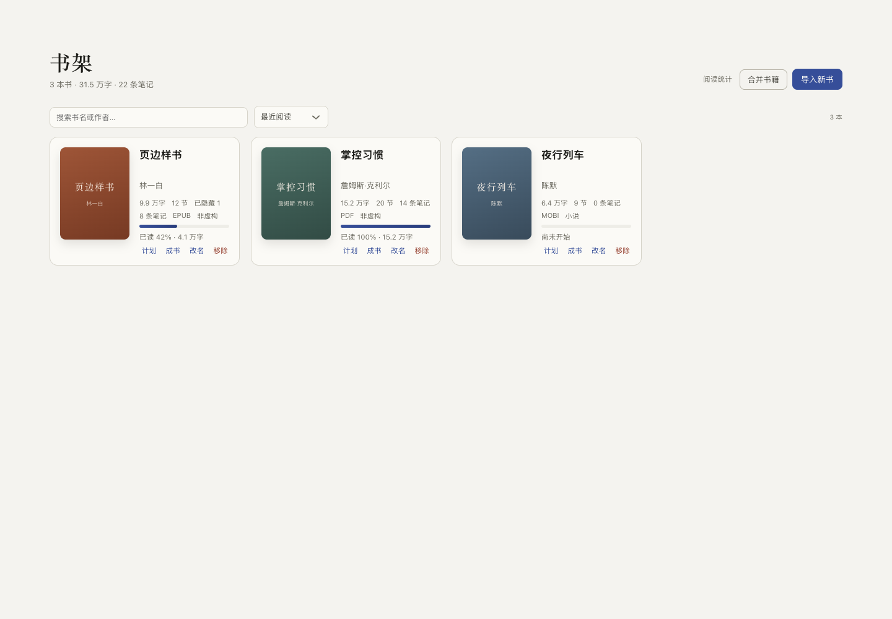
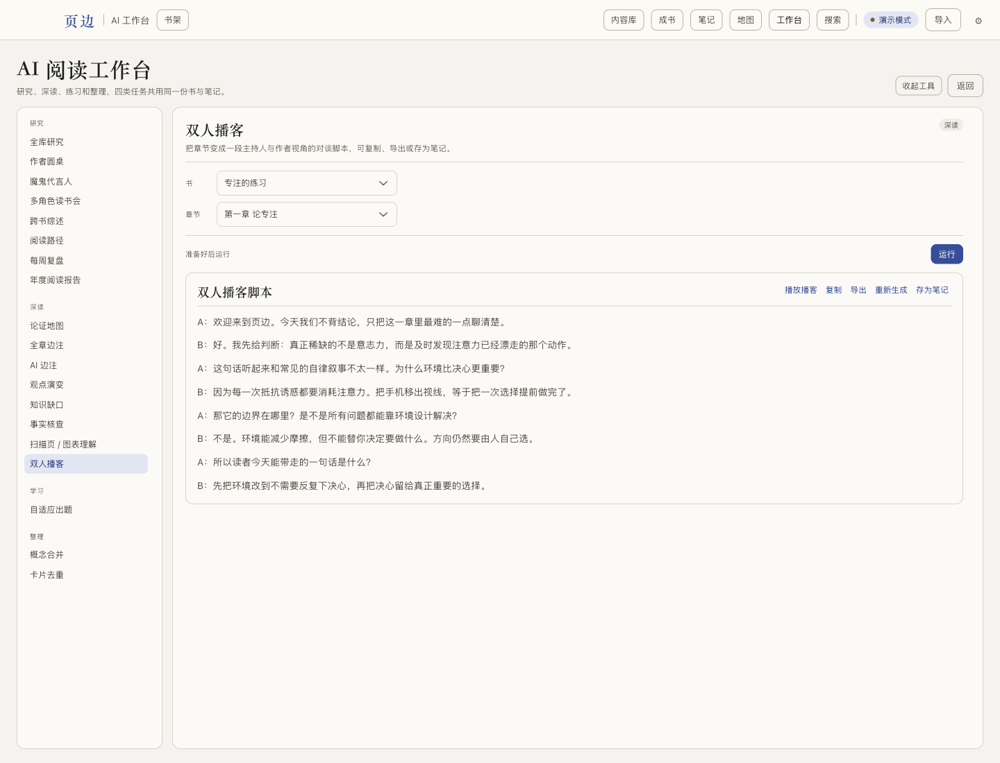
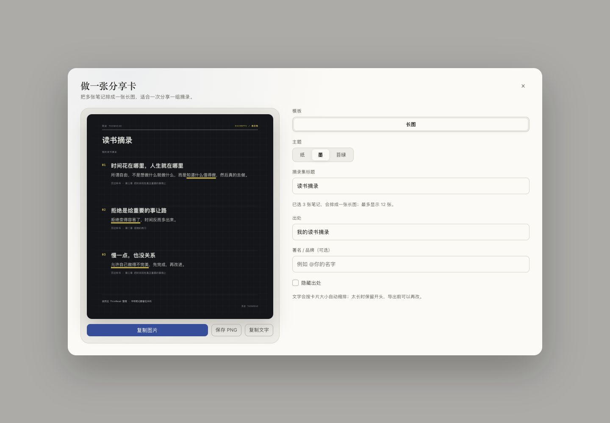
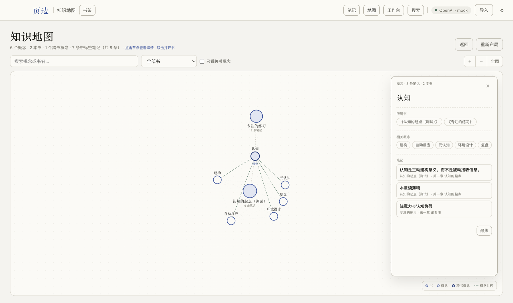
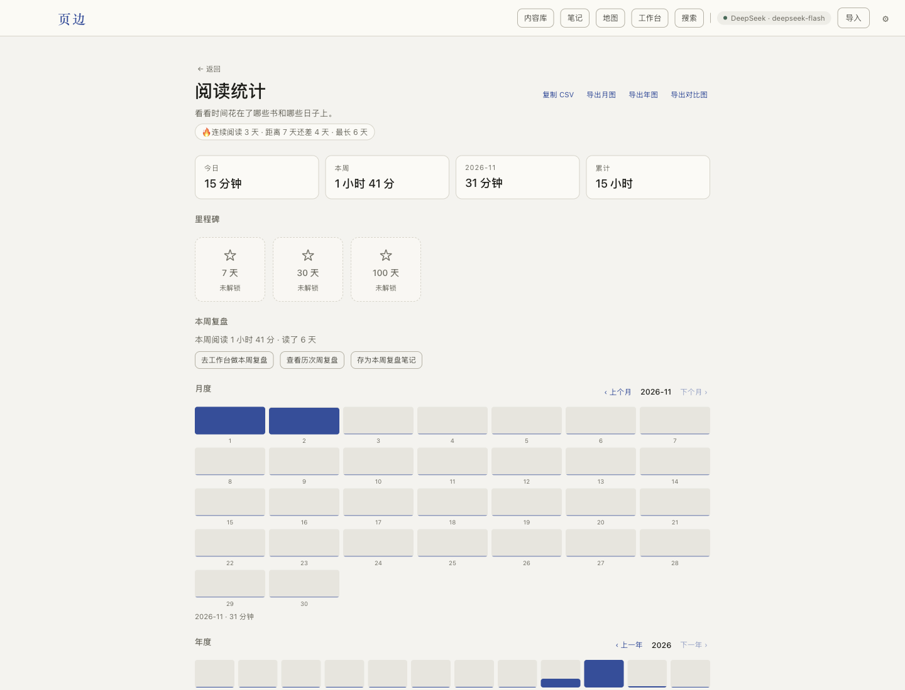

读薄成稿
按断言重写整章，保留观点和原文依据。不是页摘要，而是能继续改、继续发的底稿。
READ → DRAFTLOCAL-FIRST · AI READING WORKBENCH
页边 ThinRead 把章节读薄、提炼核心卡片、整理成书，再把笔记变成分享卡和小红书图文。 书和笔记留在本机，引用可以回到原文核对。

THE WORKFLOW
不是把划线堆得更多，而是让每一章都留下能继续使用的东西：一篇稿子、几张卡片、一条跨书关联。
按断言重写整章，保留观点和原文依据。不是页摘要，而是能继续改、继续发的底稿。
READ → DRAFT从读薄稿提炼 5–25 张真正影响理解的知识点，写清作用、引用和有限延伸。
5–25 CARDS合并章节、补过渡、去 AI 味，导出 Markdown、HTML、PDF 或完整发布包。
COMPOSE把笔记变成可以直接发的图片。深色编辑排版、重点句高亮，一套图讲完一章。
SHARE书、标签和跨书概念连成一张网；没有标签的笔记也不会消失，会进入「未归类」。
CONNECT千问 TTS 逐句朗读，A/B 双人对谈，支持睡眠定时、断点续听和 MP3 导出。
LISTENWHY THINREAD
Readwise 帮你收集，Obsidian 帮你连接，NotebookLM 帮你理解资料集。 页边只关心一件事：读完这一章之后，能留下什么可复用的东西。
“不替你读书，只把读完之后的痕迹整理好。”
页边 · 产品原则
INSIDE THE APP
书架、阅读器、工作台、分享卡和小红书，共用同一套纸墨与编辑排版。






PUBLIC ROADMAP
已采纳、修复中、接入中、已拒绝，都可以在这里看到。拒绝也会写原因。
路线图会随着真实使用反馈调整。提交建议时请尽量写清楚场景、现有替代和期望结果。
CHANGELOG / 迭代时间线
每一次版本都围绕同一个方向：让读完之后的产出更可信、更可复用。
阅读器、章节回收站、笔记依据核查、搜索索引、BibTeX/RIS/APA 引用和未签名发布流程。
首次引导、圆角图标、内嵌手册，以及模型调用前的费用与请求数确认。
章节、读薄稿、成书、报告和周复盘都可以一键复制全文。
统计持久化、笔记审计、版本 diff、Markdown 导出、阅读小结、千问 TTS、音色库、MP3 导出和段落间隔。
阅读计划、应用锁、内容回收站、分享卡/小红书重构、重点句高亮和开源协作文档。
项目介绍、下载、公开路线图、迭代时间线、点赞和 GitHub 留言。
加密同步、数据库加密、跨平台 OCR、完整 English Beta 和任务级取消。
FEEDBACK
点赞是轻量的鼓励；建议和问题会进入 GitHub Issues，按公开路线图处理。
一个浏览器只记一次；计数由 Abacus 提供，不收集个人信息。
开源、可自托管、可自己改。
正在读取最近的留言…
DOWNLOAD
macOS arm64 · 未签名内测包 · 数据保存在本机。Windows 版本正在评估中。